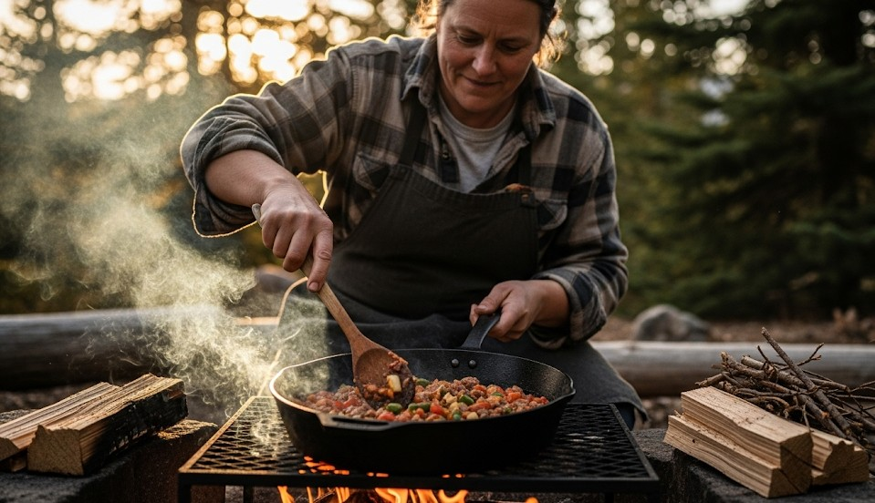

Cooking Over an Open Fire: Campfire Techniques
Objective
Cook safely and efficiently over wood fire with predictable heat zones and minimal soot.
Scenario (Example)
Example: Rain the day before; wood is damp under bark. You need a quick boil and simmer for rice and stew.
Fire Lays for Cooking
- Log Cabin: Stable platform and even heat.
- Keyhole: Fire in round; rake coals into the “key” for steady simmer.
- Trench: Windy sites—channels air for hotter burn.
Steps
- Split wet wood; expose dry cores.
- Build small, hot fire first; then add cooking wood.
- Use a grill or two green sticks for pot support.
- Rake coals for simmer zone; avoid flames licking pot sides.
Real Example
Keyhole fire boiled 1 L in 6 minutes with a steady simmer after coals were raked into the channel, saving fuel.
Checklist
- Pot with lid; long spoon
- Gloves; small grill/grates
- Water for dousing; clear mineral soil
Contingencies
- Smoky wood → increase airflow; use smaller splits.
- Fire restrictions → use a stove instead.
After-Action
Time boil/simmer phases and note wood types that soot less for your next trip.
← Previous | All Articles | Next →